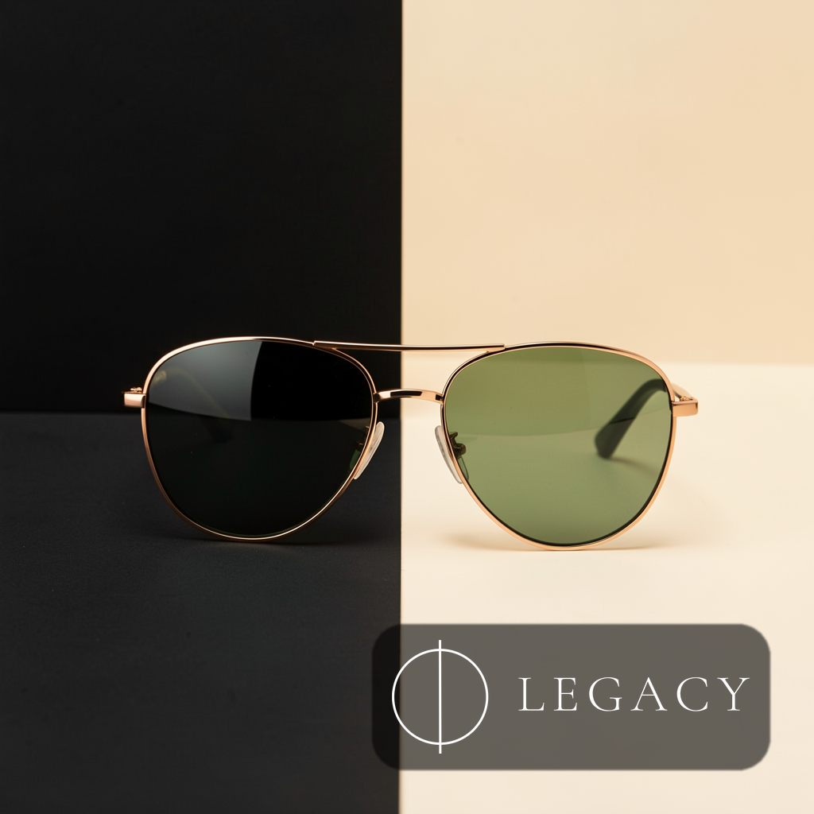

Post 01assets/legacy_optical_noir_post_01.png
ForgeGraph client handoff
Paquete armado desde el prompt operativo, con estrategia, contenido, assets, medición, QA y evidencia de linaje listos para aprobación. No se afirma publicación en vivo: el lanzamiento queda condicionado a aprobación y conectores reales.
Approval checkpoint
Artifact Index
Engagement, whiteboard, asset checksums, source deliverables, and media provenance are archived in manifest.json. The visible handoff keeps internal IDs out of client copy.
No Markdown files included.
Assets



Codex Strategy Brief
Client: Legacy Engagement: Weekend Marketing Sprint Purpose: Establish the strategic direction for a client-ready weekend social launch package that incorporates reviewed PDF feedback before creative production and final delivery.
Launch a weekend social campaign for Legacy that positions the brand as polished, cinematic, and culturally current while keeping the offer and social actions clear. The campaign should feel premium and memorable without becoming abstract, overly dark, or disconnected from the Legacy brand.
The sprint should produce social-ready post assets that explain the Optical Noir concept, distinguish campaign rollout from operational logistics, visibly carry the approved Legacy brand mark, and pass image-quality review before delivery.
Optical Noir should be treated as a branded visual and editorial lens, not just a dark aesthetic. The noir direction gives Legacy a recognizable weekend mood: sharp contrast, refined light, reflective surfaces, confident styling, and a sense of after-hours sophistication.
The rationale is strongest when tied directly to optical cues:
The campaign should speak to style-aware customers who see eyewear as part of personal presentation, not only a functional purchase. Messaging should balance confidence, clarity, and polish.
Primary audience motivations:
Primary message: Legacy brings cinematic clarity and polished style to the weekend.
Supporting messages:
Avoid messaging that makes noir feel gloomy, obscure, or unrelated to eyewear. The tone should be sleek, confident, and accessible.
This package is a weekend social rollout, not a logistics plan.
The rollout should define when and how the social story appears across channels. It should cover the sequence of posts, story frames, captions, creative emphasis, and engagement prompts.
It should not be framed as an operations schedule for staffing, fulfillment, delivery, store logistics, or internal production handling unless those details are explicitly required elsewhere.
Recommended social sequence:
Every post asset must include a visible official Legacy brand presence using the approved logo. The logo should not appear as an afterthought or hidden watermark. It must be clear enough to confirm brand ownership in-feed and in story formats.
Brand presence guidance:
The noir look should use contrast, reflective highlights, premium framing, and clean typography. Images should feel intentional and brand-led, not like generic dark lifestyle photography.
Instagram and Facebook should carry the primary weekend launch assets, with Instagram Stories/Reels used for rhythm and immediacy. Static posts should establish the campaign identity, while stories should add movement, detail, and engagement.
Recommended content mix:
Weak images must be identified and removed or replaced before client packaging. Any image that undermines the premium noir direction should not advance.
Image QA checklist:
The final package should be considered strategy-approved when it clearly:
Legacy Optical Noir is a weekend social launch built around cinematic clarity, refined contrast, and confident eyewear style. The campaign uses noir not as darkness for its own sake, but as a premium visual language rooted in light, lenses, reflection, and sharp presentation. Each asset should make Legacy visibly present, socially polished, and ready for weekend attention.
Message House
Legacy Optical Noir Message House Strategic rationale: Optical Noir is a premium contrast system for product photography, not a literal night-use claim for sunglasses. Why it works: black, ivory, copper, and controlled reflections make frames and lenses feel sharper, more editorial, and easier to remember in-feed. Positioning: lujo usable para CDMX; editorial, sobrio, accesible-premium. Brand presence: every social post should carry a Legacy logo or approved brand mark treatment unless the client explicitly requests clean product-only assets. Primary CTA: revisar estilos y aprobar piezas antes de publicar. Tone: Spanish-first, concrete, low-hype, confident.
Crm Scripts
WhatsApp / DM scripts Disponibilidad: Te confirmo modelo/color y te comparto alternativas si ya se movió. Precio: Son piezas premium; te ayudo a elegir el par que mejor se vea y más uses. Cierre: ¿Quieres que te aparte este modelo o prefieres ver dos opciones más?
Measurement Plan
Track the weekend social rollout and posting cadence: post saves, replies, profile visits, link clicks, DMs, holds, sold/blocked status, and next action every 24h. This is a posting and review cadence, not a shipping or fulfillment timeline unless the client provides logistics details. Hold live claims until connector evidence exists.
Channel Asset Map
Channel Asset Map
Qa Report
QA Report Media jobs succeeded: 6/6 Client package formats: HTML, PDF, PNG, JSON manifest, ZIP; no Markdown files. Policy: no live publishing claim; approval required before production launch. Decision: ready for review